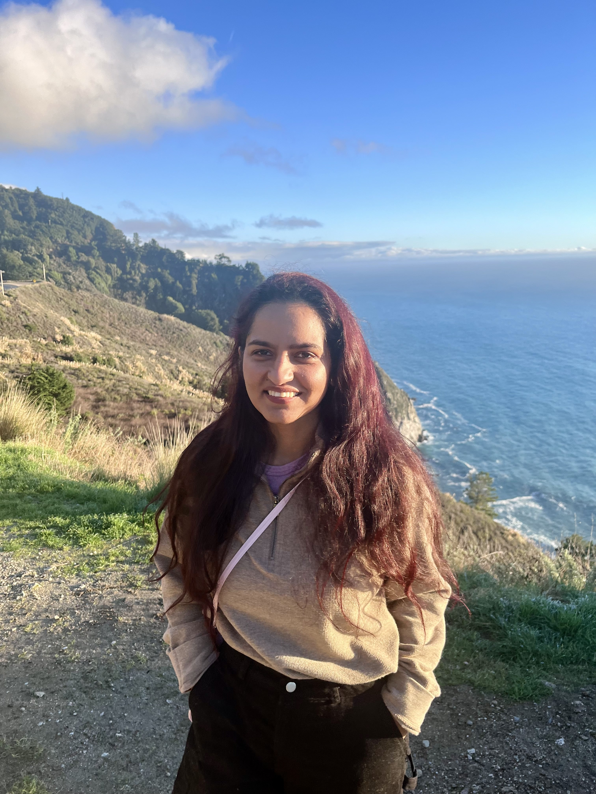

I am a PhD student at the School of Interactive Computing, Georgia Tech. My research focuses on generalizable representation learning for health sensing, building machine learning models for sensor data and clinical structured text that generalize across users, devices, home layouts, and clinical settings. My research tackles distribution shift in health sensing under varying levels of data and label availability: adapting wearable HAR models with limited supervision, transferring across heterogeneous smart-home environments , and learning generalizable representations with self-supervised pretraining for physiological signals and for structured clinical records. I previously interned at the Samsung Research America Digital Health Lab (Biomarkers team), and at Bloomberg AI Group. I am thankful to be advised by Prof. Thomas Ploetz, and grateful to be funded by Optum AI and NSF AI-CARING.

Our Health Foundation Models project at Samsung Research America received the SRA President Award 2025.
AgentSense accepted to AAAI 2026: virtual sensor data via LLM agents in simulated homes.
Wavelet-Based Masked Multiscale Reconstruction for PPG accepted at the NeurIPS 2025 Time Series for Health workshop.
Joined Samsung Research America's Digital Health Lab (Biomarkers team) as a research intern.
TDOST accepted to ACM IMWUT: layout-agnostic smart-home activity recognition via textual sensor descriptions.
Cross-Domain HAR accepted to ACM TIST: few-shot transfer learning for human activity recognition.
Deployed our layout-agnostic HAR system in the Georgia Tech Aware Home for the NSF AI CARING demo.
Co-authored paper at ISWC 2023: how much unlabeled data is really needed for effective self-supervised HAR?
Also on Google Scholar.
A zero-shot evaluation of medical multimodal LLMs on six EHR + waveform prediction tasks, showing that waveform inputs do not yield uniform improvements over EHR alone.
A canine-centric video QA benchmark (~5,000 pairs across 913 dog videos, five task categories) stress-testing long-horizon multimodal reasoning beyond human-centric scenes.
Two complementary mechanisms, HICD-BERT (token-level) and HICD-Graph (graph-level), for injecting ICD hierarchy into EHR foundation models, improving in-domain prediction and cross-dataset transfer.
I am always happy to chat about my research and looking for collaborators. Say hi on email.